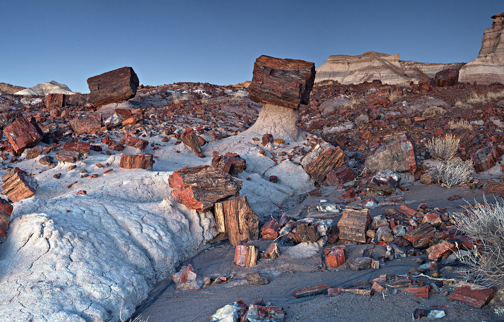
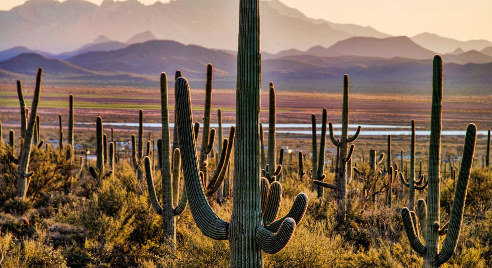

National Parks
Arizona has three National Parks including Grand Canyon National Park, Petrified Forest National Park, and Saguaro National Park.
Grand Canyon Nation Park

The Grand Canyon is 10 miles across, a mile deep, and 277 miles long. In the National Park you can visit the South Rim, North Rim, and even the Inner Canyon. The South Rim is the most popular because it is always open throughout the year. The North Rim has a short season, is harder to get to, and is more wild and secluded. The Inner Canyon is in the canyon where visitors can hike through and look up to the top of the canyon. However, the Inner canyon can get over 100 degrees.
Petrified Forest National Park
The Petrified Forest covers about 346 square miles and is about 5,400 feet in elevation. However, the park itself is 30 miles long. The Petrified Forest is known for its fossils, especially fallen trees that lived in the Late Triassic Epoch, about 225 million years ago. The temperatures at the park can range from -27 degrees all the way to 107 degrees.
Saguaro National Park
Saguaro National Park is located outside of Tucson, Arizona and has the nation's largest cacti. Saguaro National Park has two districts. The Rincon Mountain District ranges in elevation between 2,670 ft. to 8,666 ft. and consists of 6 biotic communities. The other district, Tucson Mountain District, is smaller, lower, and biologically younger than the other district but the cacti are just as large. There are numerous trails visitors can hike on as they visit Saguaro National Park.